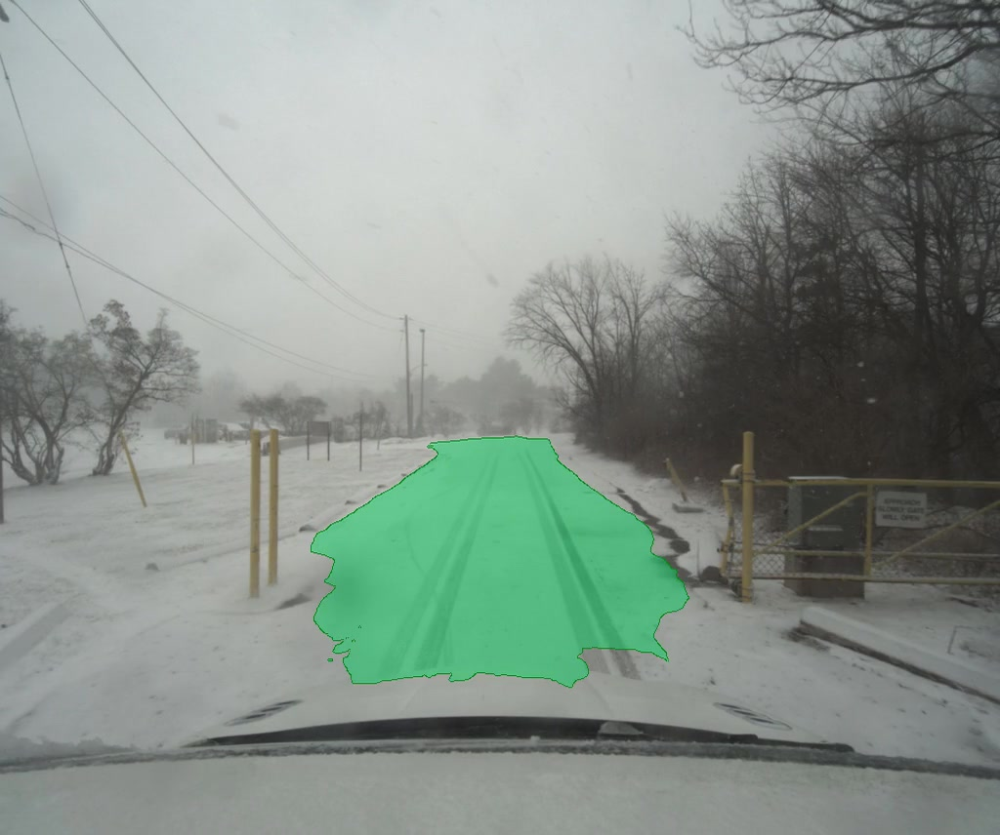
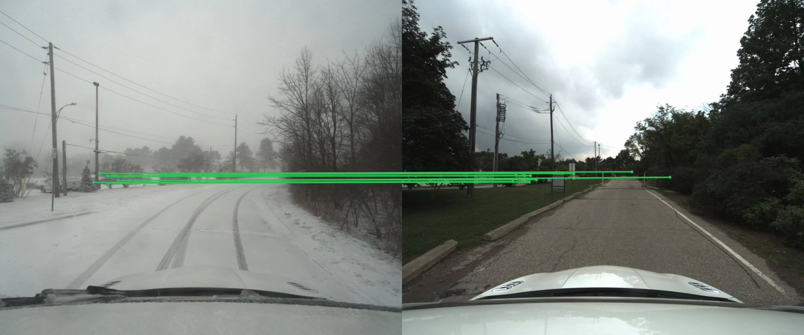
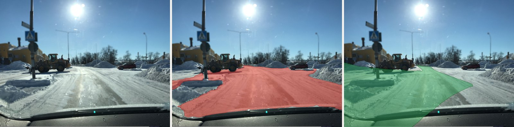

15 s clip · Boreas · Toronto · January 2021. Green = the road, transferred from a clear-season prior. Nothing in the pipeline has been trained on snow. (Hero frame above; reproduce the full clip with make reproduce.)
A snow plough's job is short — keep the road clear. While it's doing it, the road is invisible. A self-driving stack trained on Cityscapes will report, with calibrated confidence, that the entire scene is sky.
Minimal-shot autonomy is the question of how a perception system survives in regimes it has not been heavily trained on. The default answer is collect more data and retrain. But labelling cannot keep pace with reality — not for snow, dust, ash, regional construction practices, agricultural off-road, or any of the conditions a vehicle, robot, or drone meets when it leaves the regime its training set was sampled from. A perception system that depends on having been trained on each new condition will lag every condition it has not yet been trained on.
There is a different move available, and it doesn't require new training data. For almost every operating regime where autonomy fails for lack of data, there is an adjacent regime — temporally, seasonally, geographically — where data exists, and where the parts that matter are the same. A snow plough's road is the same road it was last July. The road's appearance has changed completely; its position in space has not.
If we can identify what stays constant between the data-rich regime and the data-poor one, we can extend our existing models into the new regime — without learning a single thing about it. We use the constant as a bridge. This is generalisation, not memorisation.
The plough now knows where the road is. No model in the pipeline has been trained on snow. The video extension wraps the per-pair pipeline in three thin layers: a track loader (snow stream + paired summer stream by GPS pose), a prior pool (K = 3 nearest summer captures by UTM distance), and an EMA temporal smoother (α = 0.4). A pickled cache layer makes the matching pass reusable.
| Component | Role | Pretrained on |
|---|---|---|
| DISK (NeurIPS '20) | Local features | MegaDepth · no snow |
| LightGlue (ICCV '23) | Sparse matcher | MegaDepth · no snow |
| USAC-MAGSAC (CVPR '20) | Robust homography | — |
| Mask2Former (CVPR '22) | Road segmenter (on the clear prior only) | Cityscapes · no snow |
| Boreas (IJRR '23) | Snow + paired summer driving captures (canonical video) | — (CC BY 4.0) |
| Imagery substrate | Source of clear-weather imagery for the priors | Mapillary v4 in this demo. Interchangeable — Google Street View, Bing Streetside, operator's own captures, the host dataset's summer subset all work. The pipeline is substrate-agnostic; only the geometric correspondence matters. |
Every learned component is frozen. Snow appears only at inference, as the runtime input.
The diagram is the recipe seen as data flowing between frozen components. The substrate of the clear prior is interchangeable; the geometric correspondence is what does the work.
┌──────────────┐ ┌──────────────────────┐
│ Snow frame │ │ Clear-prior frame │ any geo-tagged
│ (live) │ │ (Boreas summer, │ clear-weather
│ │ │ Mapillary, GSV…) │ imagery substrate
└──────┬───────┘ └──────────┬────────────┘
│ │
│ ▼
│ ┌──────────────────────┐
│ │ Mask2Former │ frozen
│ │ (Cityscapes road) │ Cityscapes
│ └──────────┬────────────┘
│ │ road mask in prior space
│ │
└──────────► DISK + LightGlue ◄───────┘ frozen
│ MegaDepth
▼ correspondences
USAC-MAGSAC homography classical
(ground-plane biased)
│
▼ H
warp prior mask → snow space
│
▼
fuse over K=3 priors + EMA over time
│
▼
┌──────────────────────┐
│ Road overlay on the │
│ snow frame (green) │
└──────────────────────┘A representative frame from late in the canonical clip — Glen Shields, residential, mid-morning, heavy snow on the pavement.
H⁻¹ back into the snow image's pixel space. The pipeline tracks the warped extent of each prior's full image so the next step can edge-erode where each prior actually covered.The smoothed mask is alpha-blended onto the snow frame in green and emitted. The cached FrameResult makes downstream renders (different smoothers, different layouts) near-instant — the matching pass runs once per track, then is reused across visualisations. The composition is invariant across frames; what changes is which features the matcher anchored on, which prior won, how much of the road is visible.
One frame from the canonical clip's matches.mp4: the snow query on the left, the closest summer prior on the right, with a small subset of correspondences drawn between them. The lines connect features the season has not changed — gate posts, fence wires, masonry corners, distant rooflines. There are no correspondences on the road surface itself: the snow has erased the lane markings and the kerb, and the matcher knows there is nothing visually consistent to find there. We are not matching road to road. We are using the constants on the buildings and fences to fix the geometry, then using the geometry to bring the clear image's road mask back to the snow frame.

15 s, Boreas boreas-2021-01-26-11-22, residential street near UTIAS in Toronto. Heavy snow, road buried, lane markings invisible. The strongest matches anchor on the gate post, fence wires, and distant rooflines — features the season can't change.
The clip itself is a large binary artefact produced by make reproduce on a clean clone — it is not committed. The frame above is the t = 5 s sample from the overlay layout (extracted by make assets). Five further layouts (sidebyside, two 3-panel orderings with the naive baseline, and a 2 × 2 quad with the summer prior visible) are produced by make assets for downstream composition.
A second snow drive of the same Toronto intersection on 2025-02-15 (active snowfall, late afternoon, different lighting and traffic) runs the same pipeline with the same parameters. Same code, same models, different weather and time-of-day. Evidence that the principle is robust to the conditions inside the snow regime, not just to the canonical capture. Reproduce with make reproduce-track TRACK=boreas_2025_02_15.
Scene variety beyond the Glen Shields loop is carried by the static-stills precursor (twenty-seven different physical locations across Northern Sweden and Finland). The two video clips speak to robustness inside one well-instrumented capture site; the static set speaks to breadth across many.
Synthetic priors from past frames. Snow→snow matching returns 3–7× more inliers than snow→summer because lighting, lens, and viewpoint are identical between consecutive snow frames. In single-frame stills, the resulting masks looked dramatically broader. In motion, each frame's slightly-too-large mask seeded the next frame's prior, which produced a slightly-larger mask, and the road overlay drifted outward into bushes within seconds. A positive feedback loop the static stills hid. We rejected it.
Optical-flow propagation. Same outcome, different mechanism: forward-driving cameras have vanishing-point flow that stretches the previous mask outward at every step. Rejected.
What survived: EMA on the binary mask, α = 0.4. The simplest possible smoother. It does the least damage: drops jitter without drifting; on a frame where matching fails entirely, it holds the previous good mask rather than flickering empty.
This pattern — counterintuitive failures of "obvious" improvements that look better in stills — is the lesson. Failure modes are evidence too.
Before the video pipeline, the same principle was demonstrated on individual snow / clear-season image pairs. Twenty-seven Mapillary snow + clear pairs across Northern Sweden and Finland — twenty-seven different physical locations. The video extension is built on this foundation; the static path stays runnable in the same repo.
make stillsProduces the per-pair 4-panel figures (snow / clear+mask / overlay / naive) under outputs/heroes/ plus a 27-row contact sheet at outputs/audit/contact_sheet.png.
| Zero snowy frames touch any model weights | ✓ |
| Zero snowy frames touch any annotation pipeline | ✓ |
| Snow appears only as runtime input | ✓ |
| Pretrained matcher · pretrained segmenter · classical RANSAC | ✓ |
Reproducible from a clean clone with one command (make reproduce) | ✓ |
The only handle we offered the model on the snow regime was the clear prior of the same place.
The contribution is not a snowplough. It is a primitive: the constants-bridge. A composition that takes a model trained on regime A, an inference target in regime B, and a known invariant between A and B, and uses the invariant to transfer the model into B without retraining. The invariant in this work is geometric — the road sits where it sat last July — but the shape is more general. Anything that stays constant between two regimes is a candidate bridge: anatomy across imaging modalities, terrain across illumination, scene geometry across weather, orbital schedule across polar darkness.
The snow plough is one consumer of this primitive. The road-overlay channel is what the constants-bridge looks like when consumed for buried-road perception; it is not a replacement for the perception stack. The plough's other channels (lidar, depth, obstacle detection) keep doing their work; this primitive frees them from also having to solve the road-position problem on a buried road. The contribution we are demonstrating is the primitive — not its first application.
The output answers where the road should be, not where to drive. A snow-covered car parked on the road would still sit inside the green overlay — the system has no notion of obstacles, drivable surface, or 3D geometry. That is not a bug; it is the scope. Within that scope:
Run the cross-season pipeline on any (snow, clear-prior) image pair:
make demo SNOW=path/to/snow.jpg PRIOR=path/to/clear.jpgOutputs the full 15-layout per-pair set under outputs/demo/ — matches viz, naive baseline, cross-season overlay, the 4-up panel, plus 11 permutations (singles / 2-ups / 3-up triptychs) for slide-deck arrangement. The example below is one such run, the failure-then-recovery triptych: snow query · naive Cityscapes-direct (red) · cross-season overlay (green).

The same pipeline runs on the canonical Boreas track in motion, on the static-stills precursor across 27 different physical locations, and (in principle) on any geo-tagged snow + clear-weather pair you provide.
git clone https://github.com/aturner22/snowseer; cd snowseer
git checkout video
uv sync --python 3.12
make reproduce~6 GB download (Boreas snow + summer windows) plus roughly an hour of matching on Mac CPU. Produces outputs/video/boreas_2021_01_26/overlay.mp4 — the canonical clip whose hero frame is embedded above.
Other entry points: make oracle TRACK=<id> for the pre-flight gate before any new track; make reproduce-track TRACK=boreas_2025_02_15 for the robustness alt; make assets for the full 6-layout asset bundle; make stills for the static-stills precursor; make demo SNOW=<jpg> PRIOR=<jpg> for the live entry above; make help for the full list.
Companion documents: writeup.md (essay) · analysis.ipynb (the work shown with the work) · slides.md (Marp deck source).
A model trained on regime A. An inference target in regime B. A known invariant between the two. Transfer through the invariant.
Snow on a road is one instantiation. The shape repeats across the long tail of underdata regimes that minimal-shot autonomy faces.
In each case there is a regime where data is rich, a regime where data is sparse (sometimes structurally so), and something — a geometric correspondence, an orbital schedule, an anatomical atlas, a robot kinematic chain — connecting the two without needing data from both sides. Find what stays the same. Walk across.
{kind=link}
{kind=link}
{kind=link}